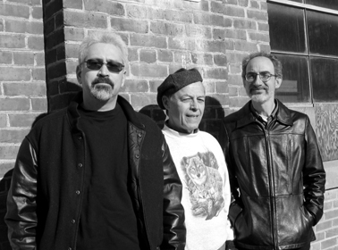

The Metro West Renku Association

Paul David Mena, Raffael de Gruttola, and Brett Peruzzi
|
Paul, Raffael, and Brett formed the Metro West Renku Association (MWRA) in 1999. Renku is a form of Japanese linked verse written by groups of poets, based on certain common themes. The more well-known form of Japanese poetry, haiku, emerged from the renku form. Each widely-published haiku poets, the trio began to experiment and adapt the renku form to American aesthetics. As both fans and musicians familiar with various types of blues-based music, they created a uniquely American renku form called bluenotes, based on the twelve-bar blues musical form. The MWRA has published its renku in many leading poetry journals, and performs its work at various venues in the Boston area, accompanied by a slide show of thematically related photographs by Paul’s wife Mary Melodee Mena. The group’s performances are also sometimes accompanied by live blues performed by local musicians. Future projects include a chapbook and audio CD of their unique form of performance poetry. To give you a taste of the MetroWest Renku Association’s live readings with blues accompaniment, we’ve created a studio version of one of our renku entitled those country blues featuring Tomas de Camino on guitar and Brett Peruzzi on harmonica. For more information,
contact Brett Peruzzi at brettperuzzi@hotmail.com. |